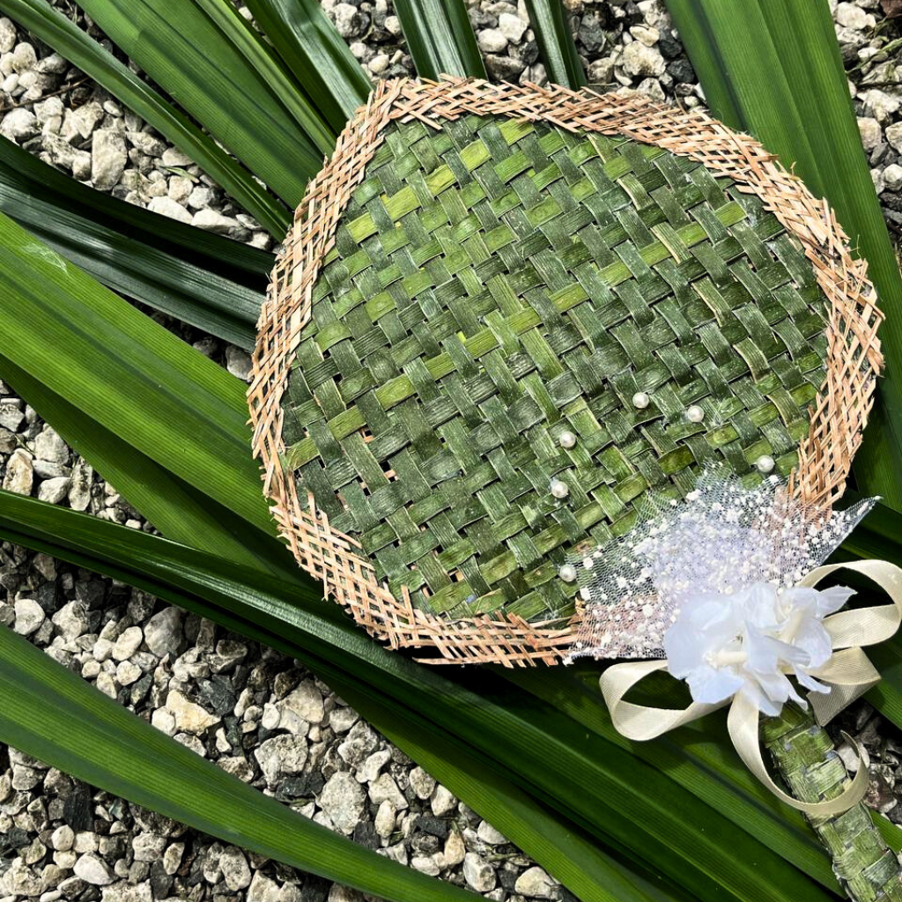
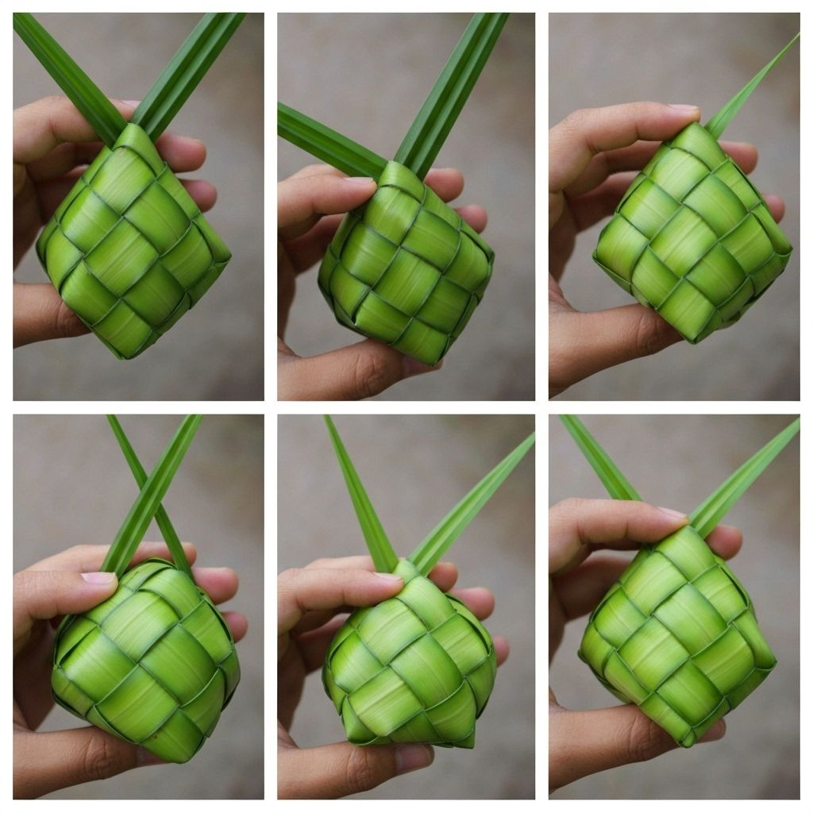
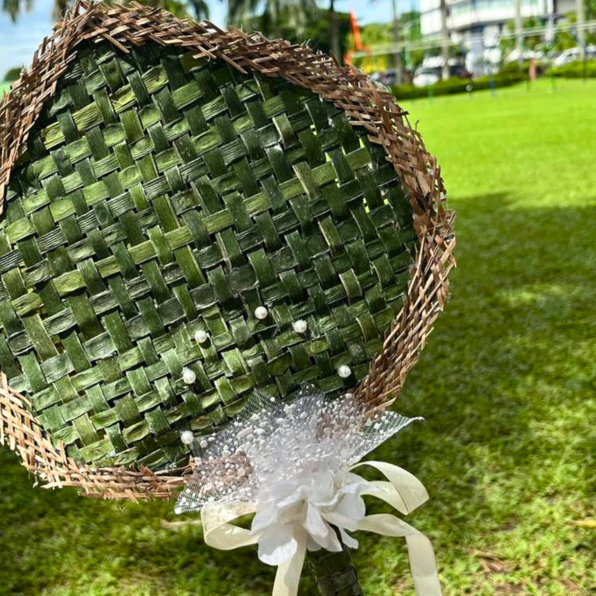
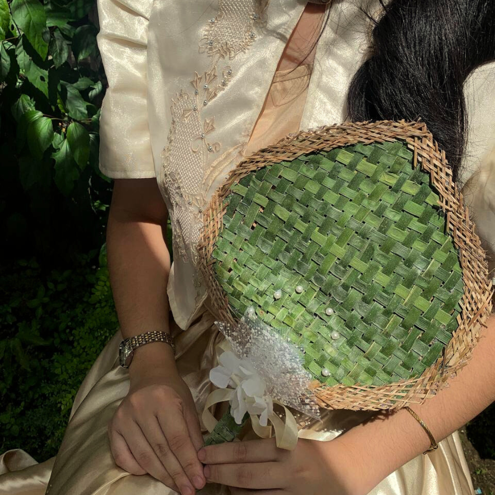
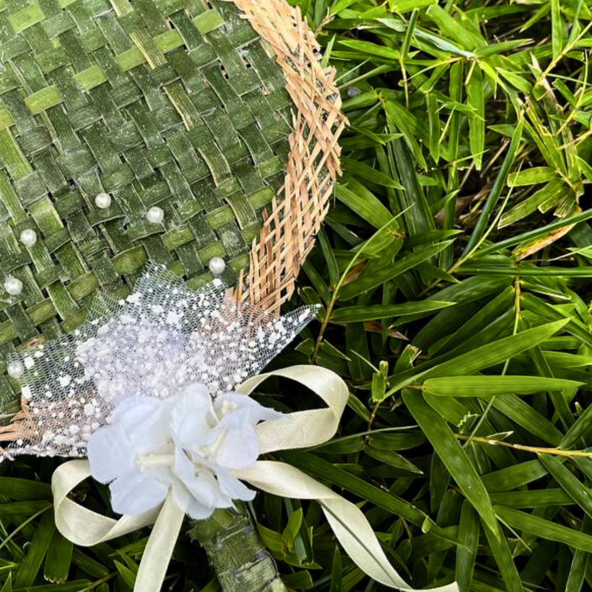
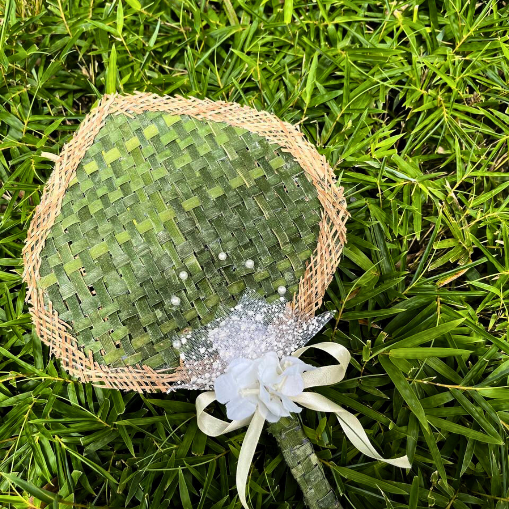
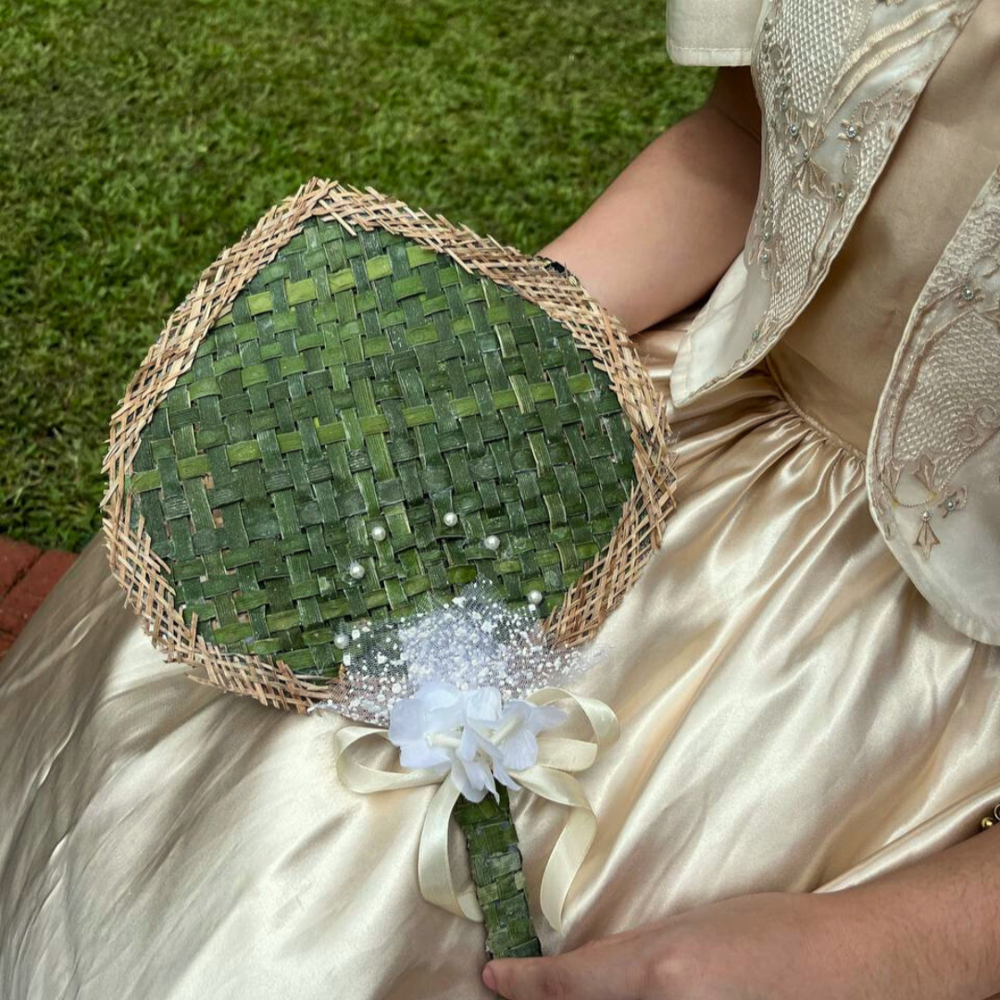
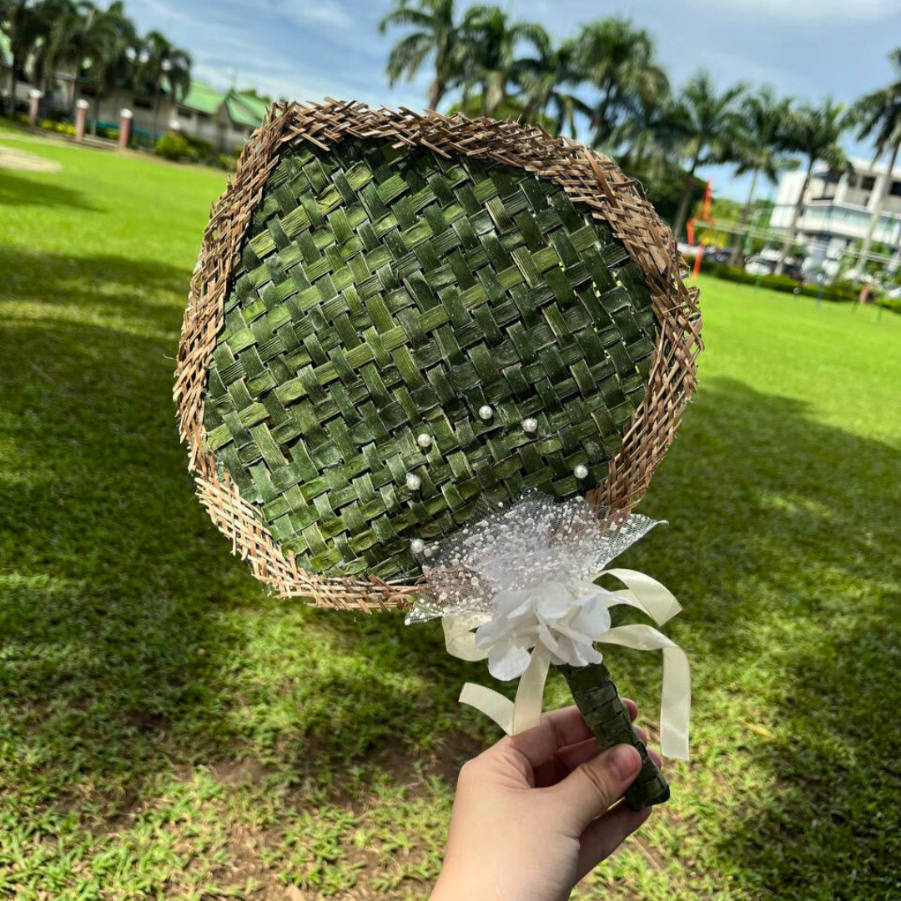

Discover Haplos Breeze — a handcrafted pandan fan that blends Filipino tradition with modern design. Inspired by the art of pandan weaving from Luisiana, Laguna, each piece reflects sustainability, creativity, and cultural pride.

Honoring Filipino craftsmanship through tradition and sustainability

Pandan weaving is a traditional Filipino craft passed down through generations. In the town of Luisiana, Laguna—known as the “Home of Pandan Products”—artisans skillfully transform dried Pandanus simplex leaves into handwoven creations such as bags, mats, hats, and baskets. This craft reflects both artistry and resourcefulness, turning nature’s abundance into beautiful, functional works of art.
Every year on April 3, Luisiana celebrates the Pandanan Festival, honoring pandan products that have long supported the town’s economy. For many locals, pandan weaving is more than a livelihood—it’s a cultural tradition that strengthens community ties and preserves Filipino craftsmanship.
Weaving pandan leaves showcases creativity, patience, and environmental care. By using natural materials found in their surroundings, artisans promote sustainable living while keeping traditional skills alive for the next generation. (Eco-friendly Handicrafts: The Art of Filipino Pandan Leaves Weaving, n.d.)
Made from handpicked pandan leaves with no synthetic materials.
Each piece supports Filipino artisans and their weaving traditions.
Pandan grows abundantly and can be harvested repeatedly, making it a sustainable choice for crafting.
Did you know?
According to Ebs (2025), pandan — also known as screwpine — is a tropical plant loved across Southeast Asia for its sweet aroma and vibrant green color. Its leaves flavor rice, desserts, and drinks, while also offering health benefits like aiding digestion and soothing the body. Beyond cooking, pandan leaves are used in traditional crafts and home remedies — proving that this humble plant is as useful as it is fragrant!
Discover the step-by-step creation of our pandan craft
Pandan leaves are split into four strips, prepared for weaving.
Strips are woven in an alternating over-and-under pattern to form the square base.
More strips are added and glued for a firm structure.
The base is trimmed, layered, and backed with abaca for strength.
A bamboo stick wrapped in pandan weave is added for grip.
Decorated with ribbons, flowers, and details for its final Hablos Breeze touch.
Pandan Leaves
Primary weaving material
Scissors
For cutting strips
Bamboo Stick
For reinforcement and handle
Abaca
For enhancement and sturdiness
Spray Paint
For color enhancement
Glue Gun
For attachment and support
Glue Sticks
For attachment and support
Design Materials
Beads, Ribbons, Net, and Flowers for decoration
Discover the beauty of pandan weaving through our crafted creation






Aroma Indahaw is a group of passionate individuals dedicated to preserving Philippine heritage through pandan weaving
Exhibit Curator
Web Designer
Art Agent
Art Facilitator
Art Facilitator
To preserve and promote the traditional art of pandan weaving by empowering Filipino artisans and showcasing their craftsmanship to a wider audience. Through creativity and collaboration, we aim to inspire communities to value our cultural heritage while embracing sustainable and eco-friendly living — proving that tradition and innovation can beautifully coexist.